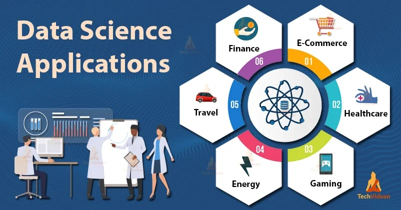
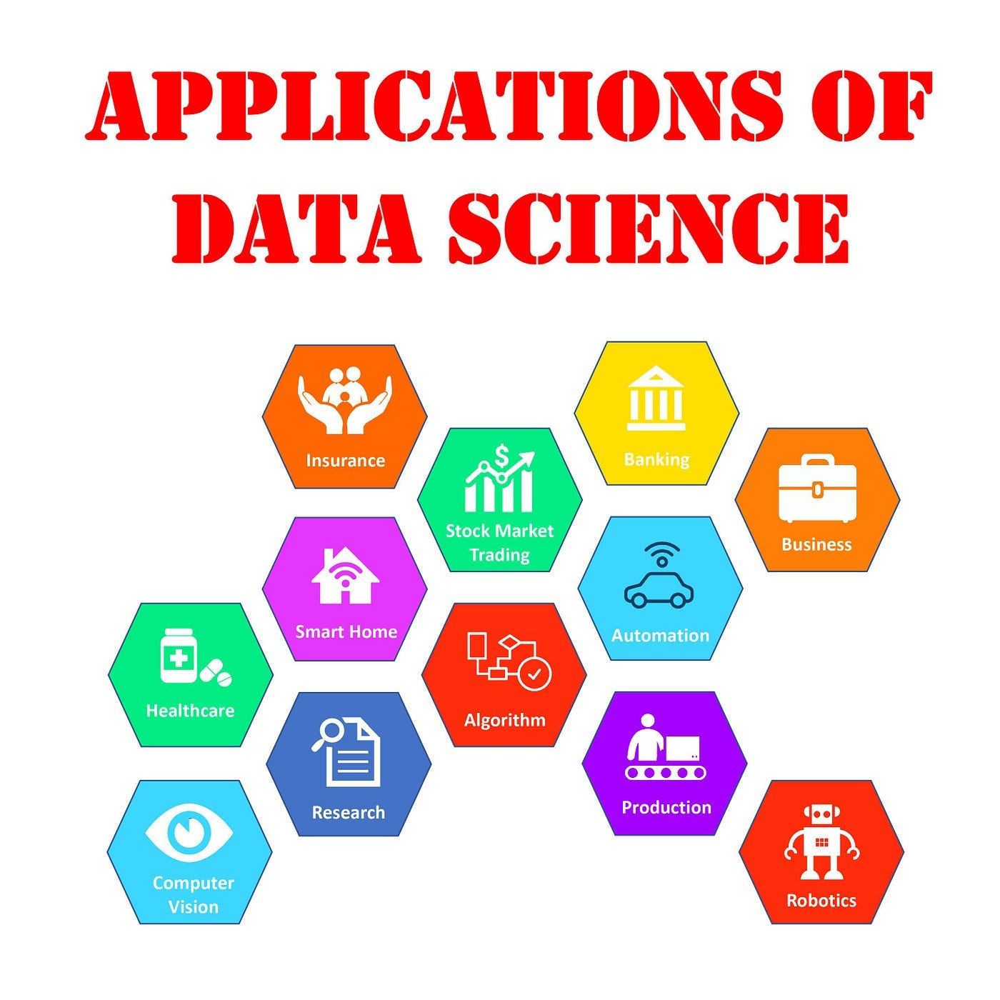
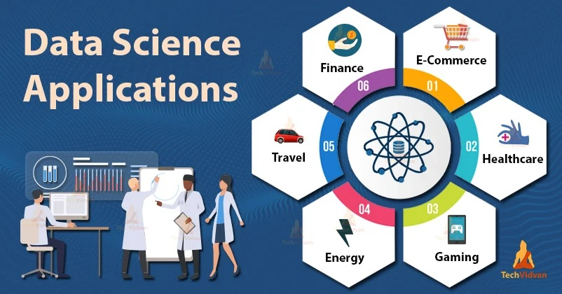
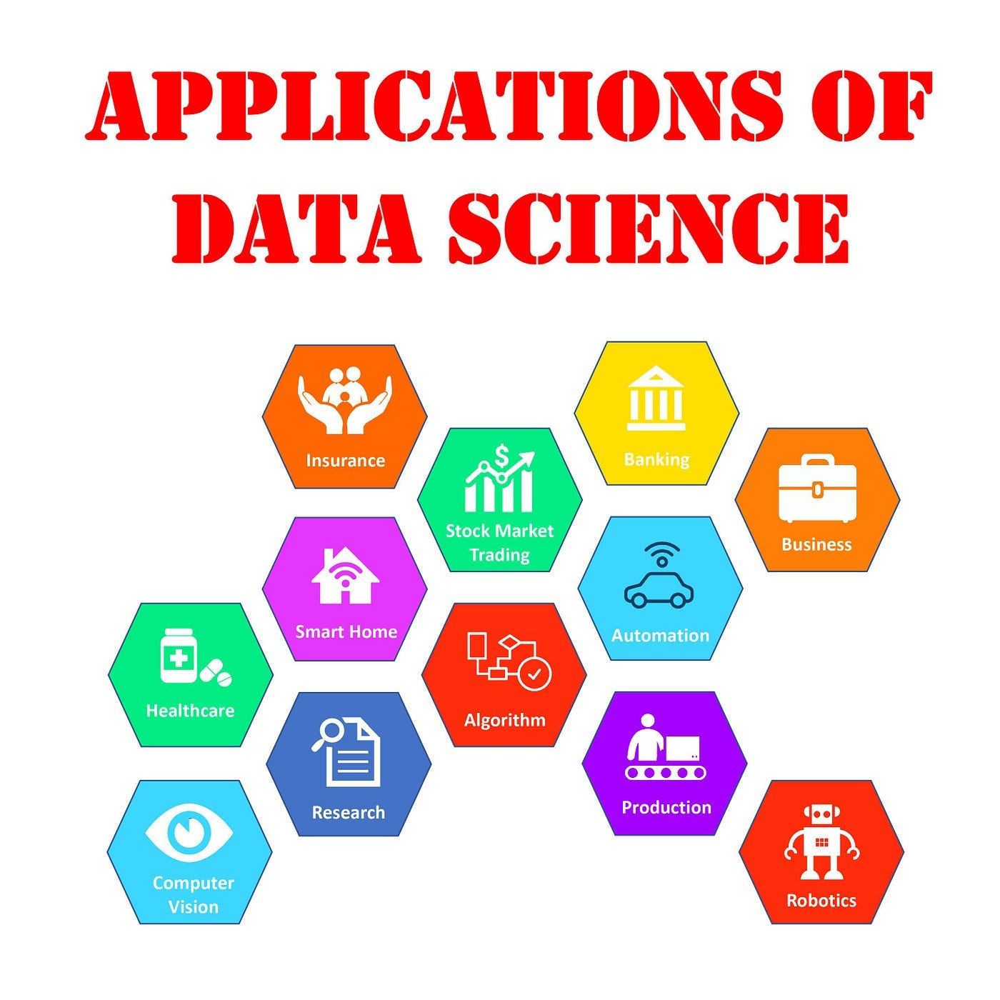
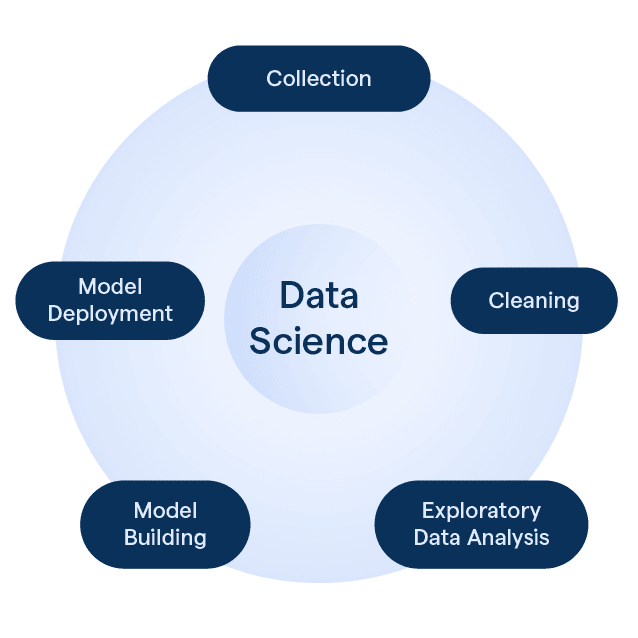
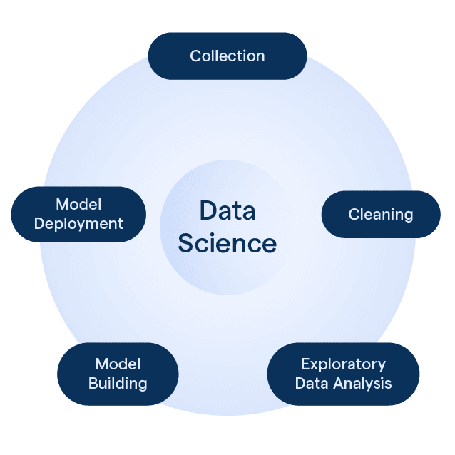

Discover the Power of Data Science & Applied Statistics
Data science and applied statistics are the heartbeats of innovation, illuminating the path from raw information to impactful decisions. In a world overflowing with data, these disciplines empower us to reveal hidden patterns, solve complex problems, and drive progress across every industry. At SPARK Institute, we believe that every dataset holds a story, and every analysis can spark change—fueling discoveries that transform communities, industries, and lives.
 



 

Our Vision
Empowering a data-driven future where insights ignite innovation and transform lives.
Our Mission
At SPARK Institute of Data Science and Applied Statistics, our mission is to:
- Educate and train: Equip individuals with cutting-edge data science skills.
- Innovate and research: Foster data-driven solutions for real-world problems.
- Collaborate and partner: Build networks with industry, academia, and communities.
- Promote data literacy: Empower diverse stakeholders to harness data's potential.
Through these efforts, we aim to spark creativity, drive progress, and make a meaningful impact in our community and beyond.
Our Values
- Integrity & Ethics
- Academic Excellence
- Innovation & Impact
- Community Engagement
- Diversity & Inclusion
Meet Our Faculty
KIRWA TIMOTHY
MSc Public Health (MUST)
Kirwa Timothy is a dedicated public health professional with a Master's degree in Public Health from MUST. His research interests and expertise lie in Public health and data. He is committed to improving health outcomes through evidence-based practices.
TURYAMUHAKI NOEL
MSc Data Science (MAHE)
Turyamuha Noel is a data science expert with a Master's degree in Data Science from Manipal Academy Of Higher Education(MAHE). His research focuses on infectious disease modeling, climate change forecasting, uncertainity quantification in machine learning and statistical modelin. He is passionate about harnessing the power of data to drive informed decision-making.
JUMBA FAHAD
MSc Data Science (MAHE)
Jumba Fahad holds a Master's degree in Data Science from Manipal Academy Of Higher Education(MAHE). His expertise lies in analyzing data patterns and trends so as to identify problems and come up with solutions, and he is dedicated to applying data-driven approaches to solve real-world problems.
What Our Students Say
"SPARK Institute gave me the skills and confidence to launch my career in data science."
- A. Graduate, Class of 2022"The faculty are supportive and the learning environment is truly world-class."
- B. Student, MSc Data Science